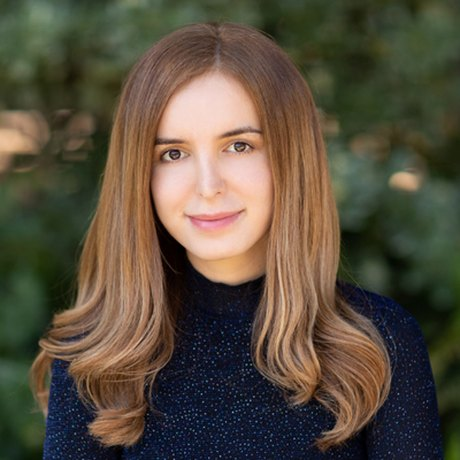

Toward Reliable Agent Development
Verification is the bottleneck between fragile prototypes and scalable, reliable agent systems. This workshop convenes researchers and practitioners to make verification a first-class discipline.
Call for Papers Submit on OpenReviewAgents that reason, plan, and act in open-ended environments are advancing at a remarkable pace. Yet a basic question has become surprisingly hard to answer: when we update an agent's prompt, add a new tool, or change its reasoning strategy, did it actually get better?
Answering that question is verification. Today it works well only where ground truth is clear, such as formal mathematics, competitive programming, and software tests. For general agentic tasks, verification signals remain shallow and noisy: improvements plateau, regressions slip through silently, and development turns into guesswork.
This workshop treats verification as a first-class research problem. We bring together researchers and practitioners working on robust verifiers, environment-grounded evaluation, and richer verification signals to lay the foundations of reliable agent development.

Scalable, self-improving AI; AlphaChip and Mixture-of-Experts.
Systems for AI at Berkeley: Ray, Spark, vLLM, Chatbot Arena.
The exact workshop day (Friday, Dec 11 or Saturday, Dec 12) will be confirmed once assigned by NeurIPS. All deadlines are 23:59 Anywhere on Earth (AoE) unless otherwise noted.
We invite submissions across three core pillars, as well as topics at their intersection:
Submissions and reviewing are handled through OpenReview.
We are assembling the program committee and welcome researchers and practitioners working on agents, evaluation, and verification.
Questions about the workshop, submissions, or sponsorship? Reach out to the organizing committee.